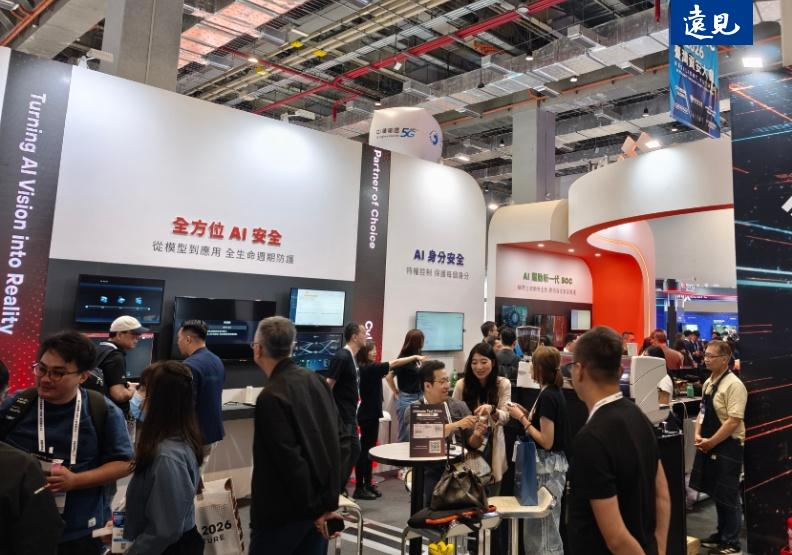

遠見雜誌
職場雷達
近期熱門文章
高階決策
AI競賽白熱化！台積電美國擴廠背後盤算曝光
台積電加速擴大美國投資，亞利桑那的第三座晶圓廠提前封頂，顯示在 AI 浪潮下，全球供應鏈布局正式升級。面對地緣政治壓力與客戶需求劇變，美國布局已成…
管理實務
人際間合不來就「停損」？與其忍無可忍才斷交，不如先修復失衡關係
在人際關係中，「停損」常被濫用為逃避衝突的藉口。然而，忍耐至極限才爆發往往導致關係破裂，而非真正解決問題。在不適感出現時便練習「表達」，清楚溝通…
職場成長
AI Agent 如何管理？企業導入前必懂安全三防線
當 AI 從「回答問題的顧問」變成「自動執行任務的實習生」，企業面對的不再只是幻覺與資料外洩，而是系統可能在幾秒鐘內被摧毀的營運危機。給予 AI…

近期熱門文章
×